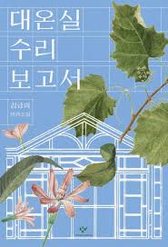
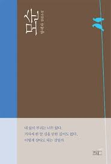

BEST PICKS
베스트셀러
지금 가장 사랑받는
열두 권의 이야기
소년이 온다
추천 도서
채식주의자
추천 도서

대온실 수리 보고서
추천 도서
급류
추천 도서
시간의 계곡
추천 도서
인간 실격
추천 도서
노르웨이의 숲
추천 도서
정원에 대하여
추천 도서
네 칼이 센가, 내 칼이 센가
추천 도서
새벽의 시인
추천 도서
위시메이커
추천 도서

삶
추천 도서
다음 베스트셀러
 소년이 온다추천 도서
소년이 온다추천 도서 채식주의자추천 도서
채식주의자추천 도서 급류추천 도서
급류추천 도서 시간의 계곡추천 도서
시간의 계곡추천 도서 노르웨이의 숲추천 도서
노르웨이의 숲추천 도서 정원에 대하여추천 도서
정원에 대하여추천 도서 네 칼이 센가, 내 칼이 센가추천 도서
네 칼이 센가, 내 칼이 센가추천 도서 새벽의 시인추천 도서
새벽의 시인추천 도서 위시메이커추천 도서
위시메이커추천 도서